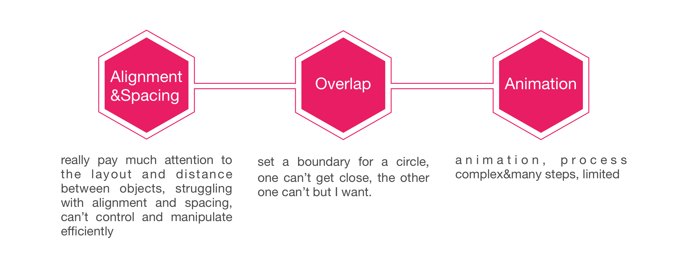

Timeline
Feb.2016(2 weeks)
Timeline
Feb.2016(2 weeks)
Location
Paris, France
My Role
Interview, Function redesign
Participatory Design
Prototyping
Deliverables
Video PrototypeBonbound is a project for anvanced design course. It's about redesigning and improvement for the slide-making tools we used everyday such as Keynote, PowerPoint or Google slider. Based on the breakdowns we found out from our own introspection and interviewing from other, generated improvements for previous slide-making tools, considering problems from views of redesign, and setup the video prototype for our project design finally.
We concluded the problems we got from the introspection and interviews about slide-making tools, found out users' pain shows as below:
Based on these problems, we decided to design a new boundary object. And then we conducted the concepts in these three parts, to make our boundary more complete.

Firstly, three intrumental design principles are well applied on the design concept, we reified the distance around object as boundary, as you can see below, the blue rectangle represents the boundary that around the text. And polymorphism, this simple boundary can be applied on any objects that you created in slides, text, image, shape and even the group shapes, as what shown in the video, you could have group shape in one boundary or group shapes with multiple boundaries. Then reuse principle, we allow user to reuse the output of boundary, which means they could copy and paste any boundary they created and give them to other objects.

We made a participantory design with users, got some informations about users’ different mental modal during this period, and comparison these with ours. After that, we designed 6 interaction points in our boundary, like create boundary, manipulate boundary and set boundary’s property, some of them have different branches.

We shared our video prototype with other group in walkthrough, got many useful feedbacks, that helped us to add some new interaction points, and also mede us redefine some previous version.
Of course we had a lot of problems during the design period. At the begining, our polymorphism and reuse were not clear. We all used digital platform to show our boundary’s work, but we didn’t realize that may limited our design, made the video more like a marketing video. And we also had disagreements with interaction points, for example, we defined create boundary with different branches, toolbar, rightclick and some other normal ways to trriger, we just design as usual without considering which way is more convenient and easier for user. And our boundary only have the normal porperties, therefore we add the depth to make it solve the overlap more efficiate.
For the future work, first we’d like to get some feedback about our video from yours, and of course we need to dicuss more details about our boundary to find more possible functions. Also we found some extreme users(obsessive) from our participantory design, we may design some parts for the exterm cases. Due to our boundary has depth property, we'd like to add some 3D animation effects with our boundary in the future.